Zhuhai Port Gateway/h1>
International design competition developed at Holmes Miller Architects, Guangzhou (CN), 2018
The project for the new Zhuhai Port, located at a strategic intersection between city, landscape, and sea, embraces connection as its generating principle: a three-dimensional urban hub that integrates public transport, pedestrian flows, and a mix of programs—offices, hotels, retail, and residences—into a fluid and interconnected system.
Guided by the poetic concept of “the river flowing into the sea, where sky and water become one” (川流入海，水天一色), the design symbolically and functionally combines water and mountain: water as a dynamic and connective element shaping flows, and mountain as the architectural form of the towers.
The design strategy is articulated through four key approaches:
Functional Connection (功能连接): Promotes the integration of multiple program types by optimizing the links between urban functions.
Dynamic Flows (动线串联): Organizes circulation paths intuitively and efficiently, enabling both vertical and horizontal mobility.
Fluid Space (空间流动): Creates open, permeable environments that encourage interaction between people and the surrounding landscape.
Unified Three-Dimensional Elements (立面多元统一): Blends multiple formal languages into a coherent and harmonious architectural expression.
Through these principles, the project defines a contemporary landmark for the city of Zhuhai—an urban, landscape, and symbolic infrastructure that reinforces the port’s role as a threshold between inland territories and the open sea.
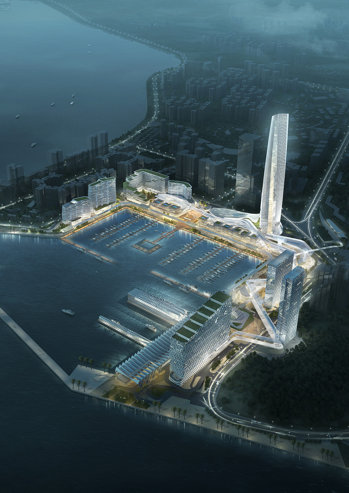
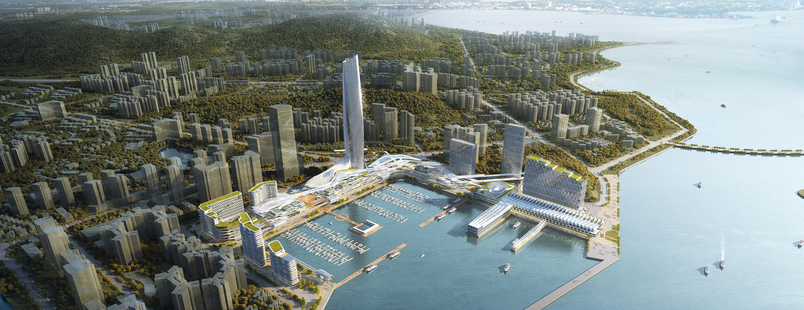
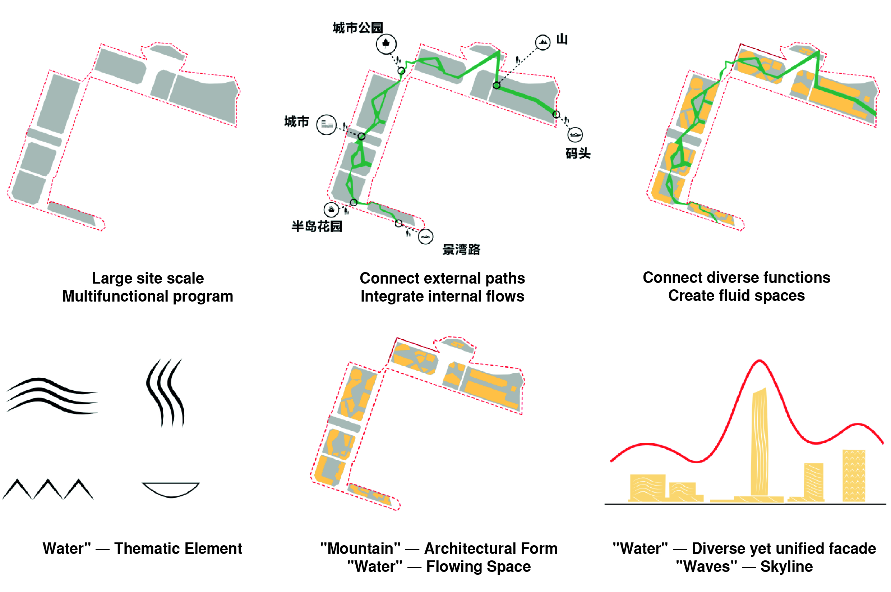
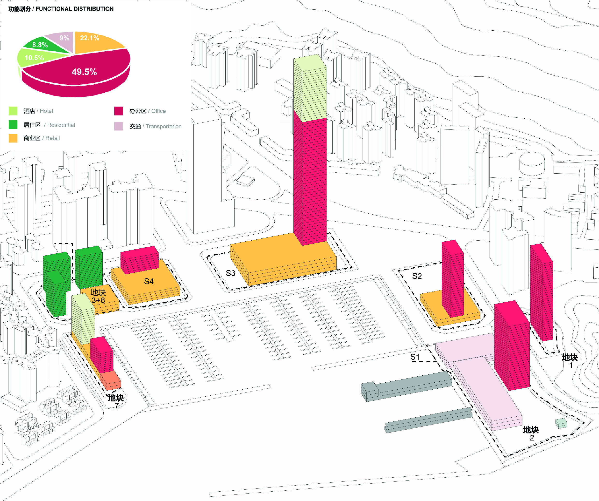
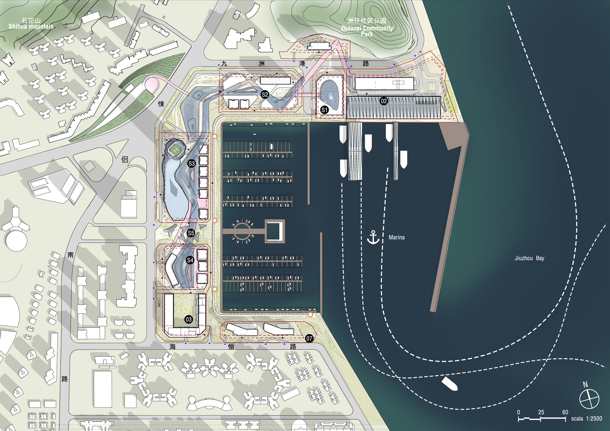
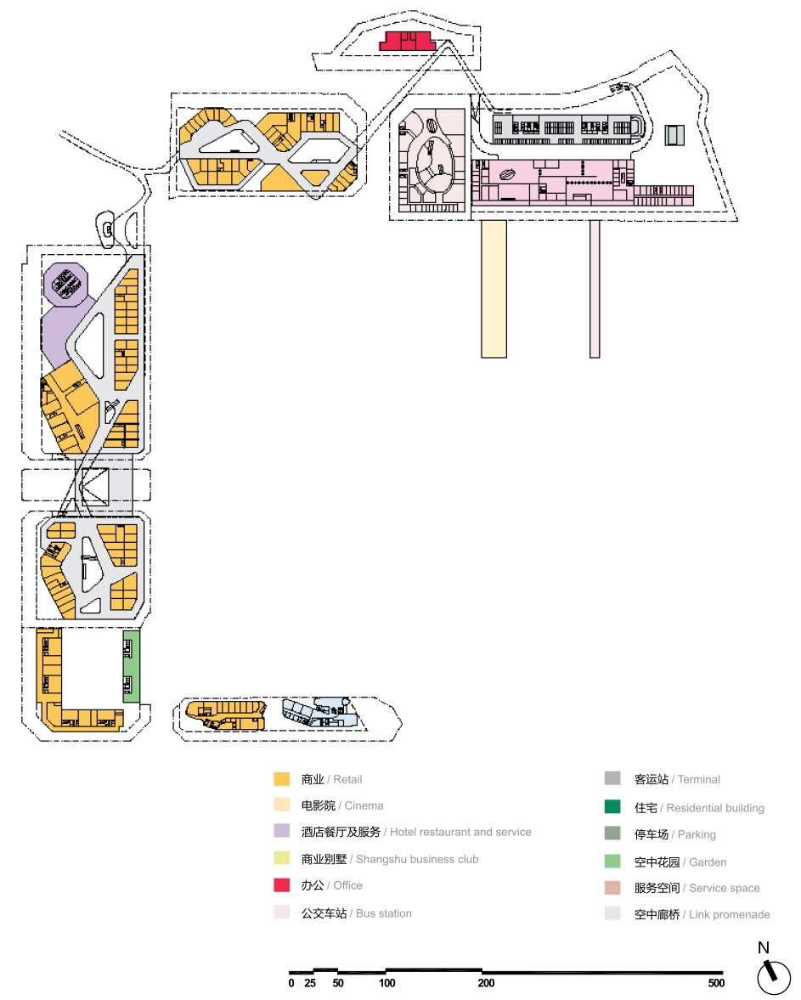
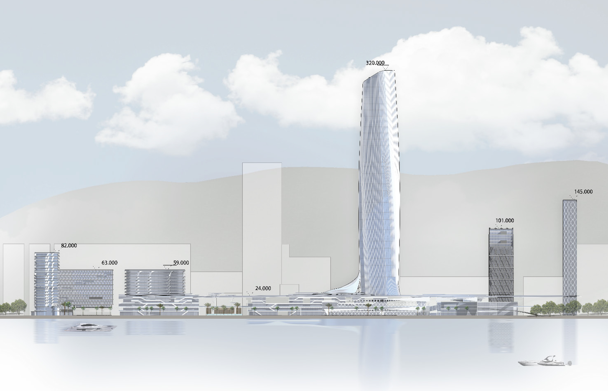
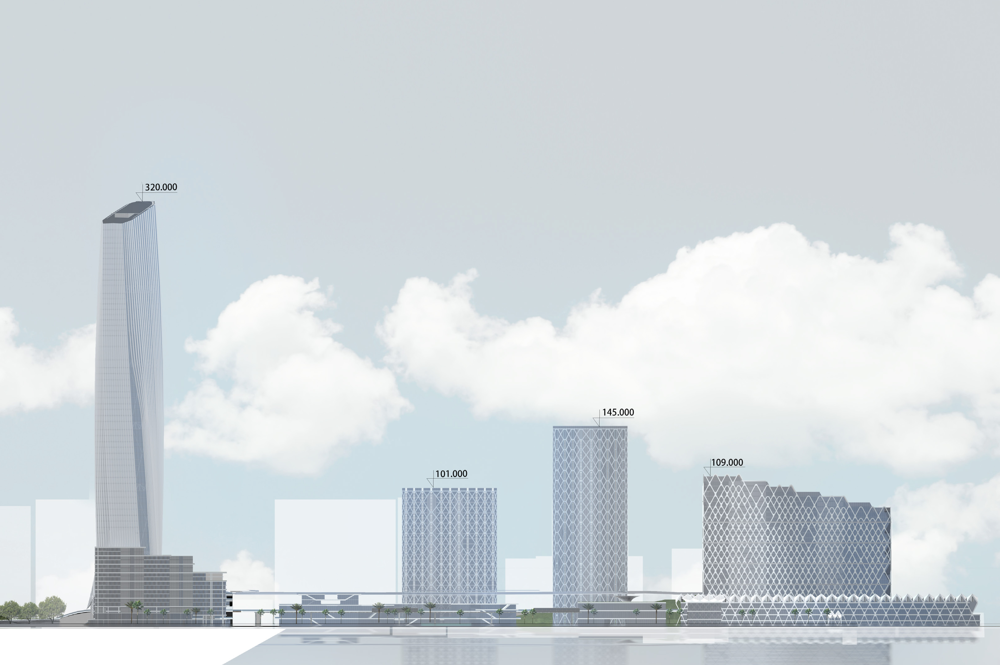
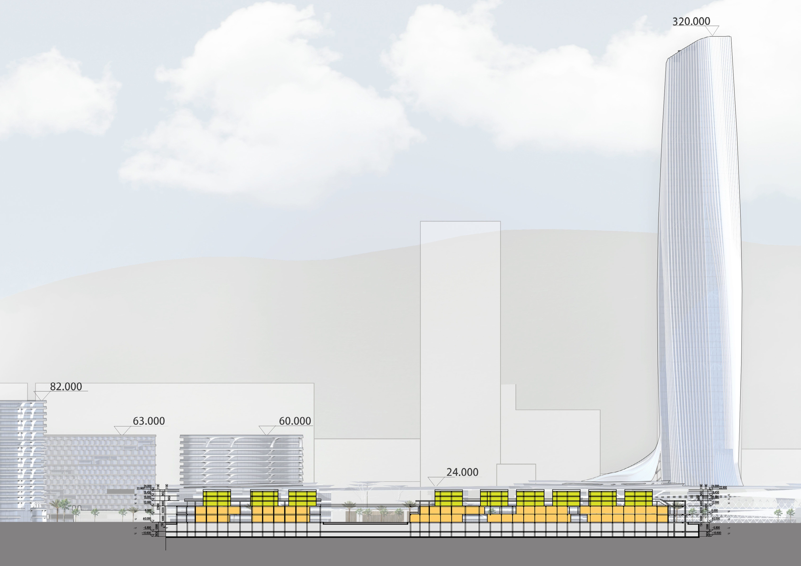
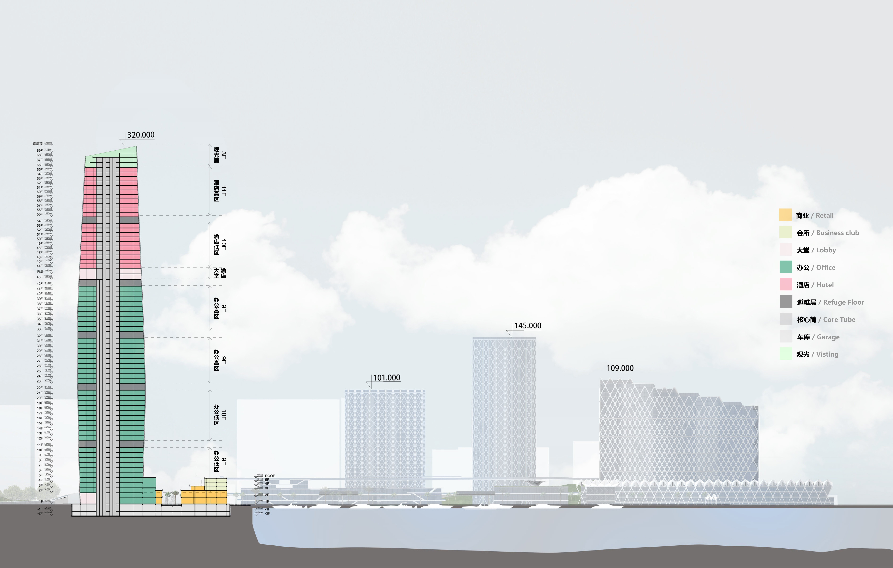
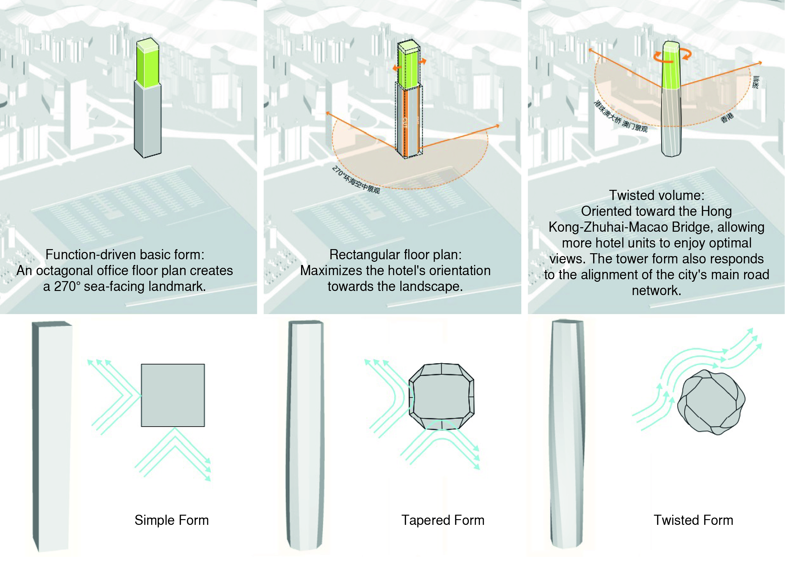

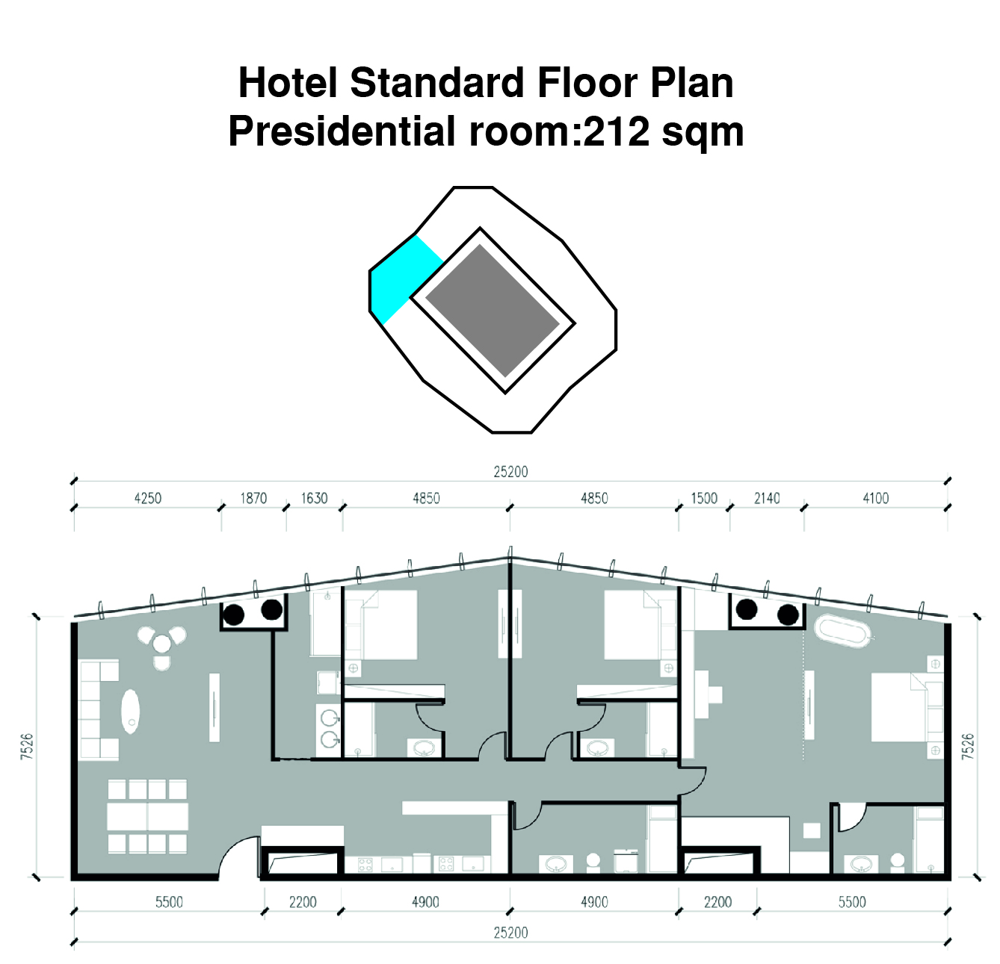